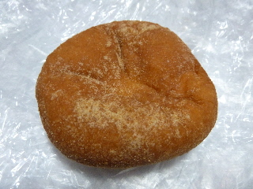
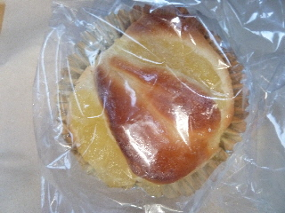
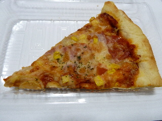
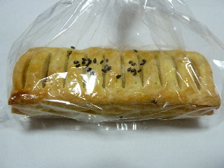
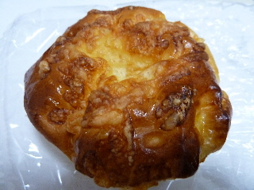
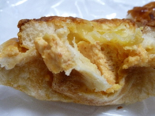

トライアル出雲店のきなこアンドーナッツ
2013/10/18
きなこがかかってちょっとヘルシーな感じのアンドーナッツです。

きなこがあると油っぽさが飛ぶもんですね。
味もマイルドになる気がしました。
油がなくなると、ちょっとあんぱん風な感じだなーって思いました。
サティー出雲店、ジャスコパラオ店があった所です。
2013/10/18
きなこがかかってちょっとヘルシーな感じのアンドーナッツです。

きなこがあると油っぽさが飛ぶもんですね。
味もマイルドになる気がしました。
油がなくなると、ちょっとあんぱん風な感じだなーって思いました。
2013/10/10
なんと69円です。

フルーツのってこの価格は凄いですね。
細かいカットリンゴを、リンゴの形にして乗せてありました。
企業努力ですね。
リンゴもパンも甘くて、いいお菓子です。
2013/03/21
ちょっと大き目のカットピザです。

持ち上げてみたら、重さがあってちょっとビックリしました。
厚みがあるんですね。
どっしりとしていて、食べごたえがありました。
トライアルでパンコーナーのピザは初めて買いました。
食品売り場のチルドピザの方が割安なんですよね。焼いて食べるのが手間なんですが、その分アツアツだし、ワンホール食べれるんですよね。
お好きな方をどうぞです。
2013/02/08
カッチリとした四角い感じのパイですね。

中にはしっかり甘いスイートポテト入りです。
期待通りの甘さで満足しました。
値段は95円でした。
トライアルさんはミスタードーナッツっぽい商品が増えた感じがしました。
2012/09/21
醤油明太ロールですよ。
そんなパンがあるんですね。

外見からは何パンかなんて分からないです。

パンを割ると、中から明太クリームが出てきました。
クリームに味付けがしっかりされてて、お惣菜パンらしい味になっていました。
近くのパン屋
ラピタ本店